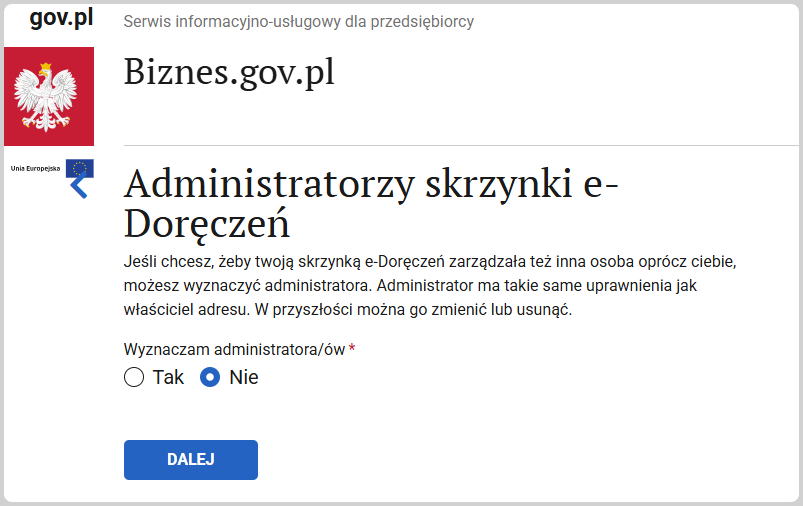
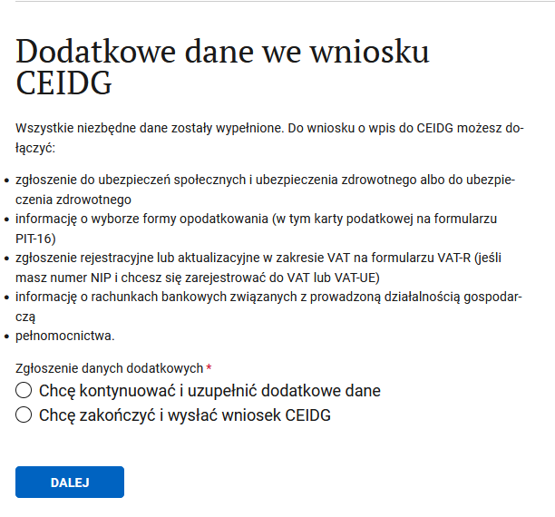
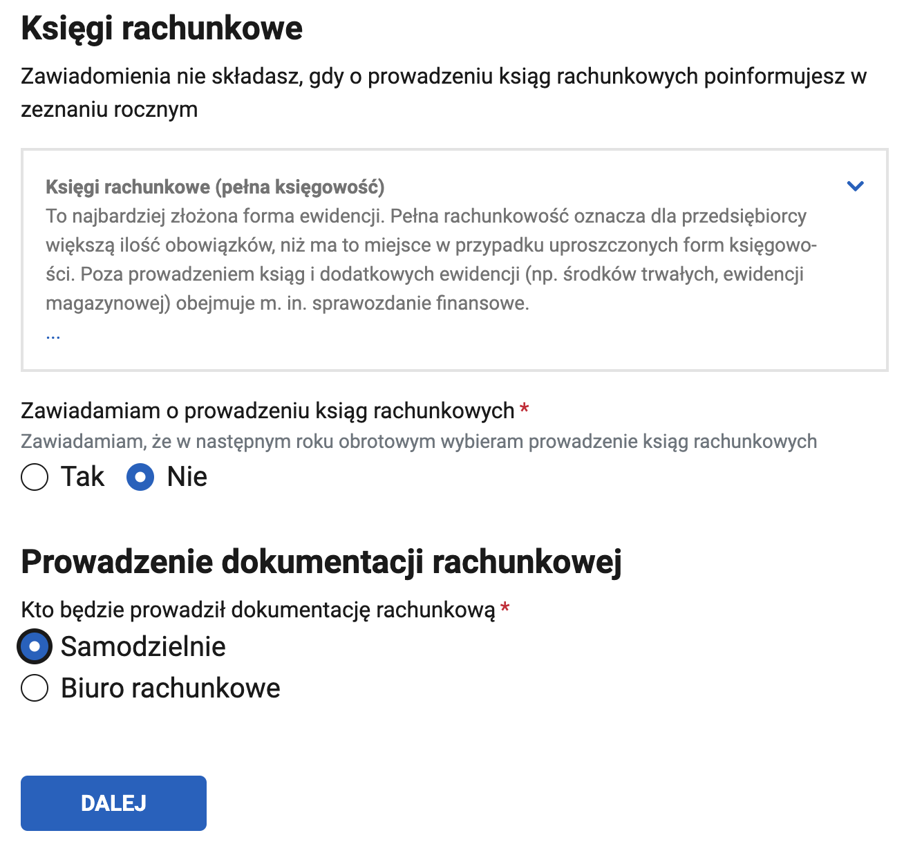
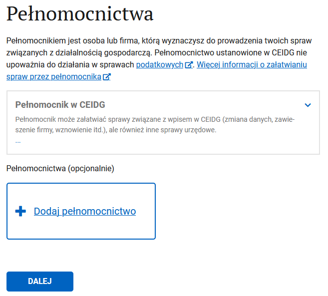

Регистрация JDG (ИП)¶
К этому моменту у вас уже должны быть
- PESEL
- доверенный профиль (Profil zaufany)
- адрес (хотя бы для корреспонденции)
Регистрация ИП на портале biznes.gov.pl¶
- Сначала жмём на
Logowanieв правом верхнем углу и попадаем на страницу с выбором вариант логина (как на картинке). - Нас интересует
Zaloguj się przez Login.gov.plи логинимся с использованием доверенного профиля.

- Выбираем в большом синем прямоугольнике
ZAREJESTRUJ FIRMĘ:

После этого начинается пошаговое заполнение формы на регистрацию ИП.
Заполнение формы регистрации¶
1. Окно информационное приветственное¶

Нажимаем на ROZPOCZNIJ
2. Важная информация¶
Нажимаем на DALEJ
3. Данные заявителя¶
Шаг "Dane wnioskodawcy".
Удаляем польское гражданство, добавляем ваше.
В итоге должно получиться как на картинке ниже.

Дальше заполняем свои данные: имя, фамилия, имя отца, имя матери, pesel, место рождения:

И ещё парочка вопросов:
- номера NIP скорее всего у вас нет.
- заграничный идентификационный номер (тут их интересуют в основном европейские налоговые номера, но можете указать и беларуский/украинский).
- совместное имущество (Wspólność majątkowa):
- если в браке без договора - tak,
- если в браке с договором - nie,
- если не в браке – nie dotyczy,
- если не хочешь отвечать на вопрос - Nie chcę udzielać odpowiedzi.
В итоге должно получиться как на картинке:
Нажимаем на DALEJ
4. Данные иностранца¶
- Те кто на визе PBH вписывают номер визы и дату выдачи визы, оставляем чек-бокс с консулом, нажимаем на Wyszukaj и выбираем там посольство, которое выдало визу (например для Минска: Ambasada Rzeczypospolitej Polskiej w Republice Białorusi vulica Zmitraka Biaduli 11 :: Mińsk::). Ещё нужно учитывать, что страница ищет по польским названиям, поэтому Minsk просто так не находится, а Mińsk - находится.
- Если открываете по карте поляка - то указываете, соответственно, данные карты поляка и организации, выдавшей карту.
- У украинцев такой диалог вообще не появляется, но если появится - есть две опции:
- если есть PESEL UKR: указываете PESEL.
- если нет - отмечаете что приехали до войны и загружаете паспорт или другой документ.

- прикладываем сканы паспорта и визы/карты побыта если вы подаетесь на основании Blue Card добавьте также скан децизии. Так же не меняйте название документов предложенные порталом иначе получите в ответ на внесок Kod błędu: -4 Komunikat: Wniosek odrzucony przez moduł Weryfikacji Obywatelstwa (суммарный размер файлов не должен превышать 3.5mb, иначе будут проблемы с подписанием заявления)
- выбираем чек-бокс, что вам можно иметь ИП на территории Польши:
Нажимаем на DALEJ
5. Адрес проживания¶

Нажимаем Dodaj nowy adres

Вводим адрес и жмём ZAPISZ.
Note
Здесь можно вводить заграничный адрес если на данный момент живете за границей. Потом его можно будет поменять. На ведении деятельности это никак не отразится.
И должно получиться как на картинке.

Нажимаем на DALEJ
6. Данные фирмы¶
- Полное название фирмы должно содержать как минимум ваше имя и фамилию латиницей. Краткое название может быть любым. Для простоты рекомендую полное и краткое название указать в виде "Имя Фамилия".
- Дата начала деятельности может быть как сегодня, так и в будущем. Потом ее можно будет поменять.
- Еще нужно указать планируемое количество работников вместе с вами (то есть если не планируете нанимать работников, то 1).
- Также, укажите галочкой планируете ли нанимать работников с ограниченными возможностями.
- Номера REGON у вас скорее всего ещё нет.
- Контактные данные - те которые будут видны в публичном реестре CEIDG. Опционально - говорит само за себя, и можно не соглашаться на публикацию в CEIDG.
Note
рекомендуется не публиковать данные (поставить галочку Nie), иначе сразу после регистрации на вас обрушится лавина спама.

Нажимаем на DALEJ
7. Коды деятельности¶
Нажимаем Wybierz kod PKD, находим подходящий код, он будет основным. Можно добавить несколько, если надо (один всё равно должен быть выбран в качестве основного)

Нажимаем на DALEJ
8. Почтовый адрес¶
Тут надо указать адресата и адрес для корреспонденции. На этот адрес госорганы будут слать бумажные письма. Можно смело указывать адрес арендной квартиры, для вашего арендодателя ничего не изменится.
Нажимаем Dodaj nowy adres и в итоге получится как на картинке:
Нажимаем на DALEJ
8a. e-Doręczenia - электронная система доставки писем¶
Info
e-Doręczenia - это электронная система доставки официальных документов и корреспонденции. Она позволяет организациям, предпринимателям и гражданам получать и отправлять юридически значимые сообщения в цифровом виде, заменяя традиционную бумажную почту. Они юридически эквивалентны традиционной заказной почте с уведомлением о вручении. Каждому пользователю присваивается электронный адрес доставки (Adres do Doręczeń Elektronicznych, ADE). Адресат получает уведомление о новом документе и может его просмотреть через защищенный портал. Подробнее можно почитать по ссылке
На шаге "Adres do e-Doręczeń" Вам предлагают зарегистрировать электронную доставку. Скорее всего у вас ещё нет такого адреса, поэтому выбираем первый пункт - хочу подать данные для создания адреса e-Doręczenia.
На шаге "Dane właściciela adresu do e-Doręczeń" система покажет данные пользователя, введённые ранее, осталось только ввести адрес электронной почты, на который будут приходить уведомления.
Шаг "Administratorzy skrzynki e-Doręczeń".
Если хотите, чтобы к адресу e-Doręczeń имел доступ другой человек (администратор), добавьте его. У него будут такие же права, как и у собственника. В дальнейшем его можно будет удалить.
Если нет, выбираем - Nie.

Нажимаем на DALEJ
9. Адрес ведения деятельности¶
У IT есть опция: не имею постоянного места ведения деятельности, выбирайте ее. Здесь вы, скорее всего, не хотите указывать адрес арендной квартиры.
Если у вас такой адрес есть (реальный или виртуальный офис), тогда укажите его.
Нажимаем на DALEJ
10. Выбираем способ страхования¶
Все предприниматели в Польше обязаны уплачивать ЗУС, так что выбираем его и указываем дату, с которой начинаем платить ZUS (скорее всего будет совпадать с датой начала деятельности):
Нажимаем на DALEJ
11. Скарбовы ужонд¶
Подтягивается автоматически по ранее введённому адресу, если знаете, что вам в другой, то можно найти более подходящий:

Нажимаем на DALEJ
12. Дополнительные сведения¶
На этом можно и закончить, но есть возможность сразу зарегистрироваться в ZUS и выбрать систему налогообложения. Чем мы и воспользуемся, выбирая первый пункт:

Нажимаем на DALEJ
13. Регистрация в ZUS¶
Чек-бокс, что хотим зарегистрироваться и что регистрируем только себя (ну или по обстоятельствам выбираем нужные пункты), и выбираем формуляр ZUS ZZA:

Нажимаем на DALEJ
14. Детали ZUS¶
Здесь можно выбрать ульгу на старт. Также, укажите если получаете пенсию и/или имеете инвалидность:

Нужен код деятельности, нажимаем на ссылку и ищем подходящий (например, Programista Aplikacji):

Нажимаем на DALEJ
15. Выбор отдела NFZ¶
Ищем свой отдел по месту жительства:

Нажимаем на DALEJ
16. Адрес мельдования¶
Адрес регистрации. Если у вас нет польского мельдунка - то укажите свой заграничный адрес регистрации:

Нажимаем на DALEJ
17. Адрес для корреспонденции¶
Выбираем куда будет приходить бумажная почта от ZUS, опционально указываем мэйл и телефон для связи:

Нажимаем на DALEJ
18. Налоги¶
Можно сразу выбрать систему налогообложения или временно пропустить этот шаг.
Внимание!
Пропускайте шаг выбора налоговой системы только в том случае, если Вы точно знаете, что делаете! Если Вы забудете сделать выбор до уплаты первого налога, по умолчанию будет считаться, что выбрана общая система (Skala podatkowa). Поменять выбор можно будет только с начала следующего года.

Нажимаем на DALEJ
19. Выбор системы налогообложения¶
Собственно выбираем систему налогообложения:

Нажимаем на DALEJ
20. Ведение бухгалтерии¶
- Если вы выбрали систему налогообложения ryczałt - то можете выбрать упрощенный документооборот: (Zawiadam o prowadzeniu ksiąg rachunkowych - Nie).
- Указываем, кто будет вести бухгалтерию: сами или бухгалтер. Потом эти данные можно поменять.

Нажимаем на DALEJ
21. Адрес хранения бухгалтерский документов¶
Выбираем адрес, где будут храниться бухгалтерские документы:

Нажимаем на DALEJ
22. Банковские счета¶
Info
Счёт в PLN понадобится, чтобы уплачивать налоги. Счета USD / EUR нужны для поступлений из-за рубежа. Разрешено использовать личный счёт (konto osobiste) для ИП. В некоторых случаях обязательно открывать бизнес-счёт (konto firmowe).
konto firmowe нужно, если выполняется одно из условий:
- вы зарегистрированы как плательщик НДС (czynny płatnik VAT). При расчётах сможете использовать механизм разделённого платежа (mechanizm podzielonej płatności (MPP)).
- стоимость одной сделки с другим предпринимателем превышает 15 000 PLN (даже если вы оплатите счет по частям).
- чувствительные операции: по закону некоторые операции считаются "чувствительными" и требуют наличия счета компании. Список таких операций можно найти в Приложении 15 к Закону об НДС. Подробнее на Biznes.gov.pl - MPP, https://t.me/JDG_PBH/9236 и https://t.me/JDG_PBH/18806
- Если планируете использовать только личный счёт, то его можно и указать.
- Если планируете открывать бизнес счёт, то его пока нет.
Нажимаем на DALEJ
23. Представительство¶
Возможно вам нужен представитель, у которого будет от вас доверенность, на какие-то действия. Его можно добавить на этом шаге.

Нажимаем на DALEJ
24. Заявление¶
Предупреждение об ответственности:

Нажимаем на DALEJ
25. Приостановка деятельности¶
Скорее всего вот так сразу вы деятельность приостановить не хотите:

Нажимаем на DALEJ
26. Справочная инфа¶
Рассказывают, где и у кого можно получить больше информации и помощь, а также, кто ответственный за рассмотрение внеска.

Нажимаем на DALEJ
27. Ещё инфа, итоговая¶
Морально готовят к тому, что скоро всё закончится:

Нажимаем на DALEJ
28. Подписание документа¶
Шаг "Dokument gotowy do podpisu". Если нажать на ссылки xml, то можно скачать формы себе на память.
Выбираем что хотим подписать доверенным профилем (PROFIL ZAUFANY и BANKOWOŚĆ ELEKTRONICZNA - скорее всего приведут к одному и тому же результату, я выбирал банковость, потому что профиль регистрировал через банк):
Дальше переходим на собственно подписание, нужно нажать на Podpisz podpisem zaufanym:

И наконец-то можно выслать подписанные документы:

Очень рекомендуется скачать и перепроверить своё заявление
- переходим по ссылке
- Выбираем в своих делах запись Zarejestruj działalność gospodarczą w CEIDG
- Рядом с 202NNNNN-NNNN-NNNN-wniosek.xml нажимаем Podgląd
- В частности, стоит убедиться в том, что отмечена форма налогообложения, например, ryczałt (смотрим пункт 15. Oświadczenie o formie opłacania podatku dochodowego). Был случай: в заявлении форма налогообложения по какой-то (технической?) причине осталась не выбранной, человек вёл деятельность и исправно платил налоги в соответствии с формой ryczałt, и только после подачи декларации PIT-28 в следующем году с ним связался инспектор, сказал, что формуляр PIT-28 не может принять, потому что форма налогообложения не была выбрана, значит по умолчанию применяется общая форма, из чего следует необходимость пересчёта и доплаты налогов по общей форме налогообложения. Конечно, это было шоком и финансовым ударом. Поэтому сразу проверьте заявление.
Что дальше¶
Дальше вам сообщат о принятии заявления, и что ответ стоит ждать через 24 часа.
NIP может быть присвоен в течении одно-двух дней. REGON надо ждать больше - может выдаваться до недели. Если в процессе есть какие ошибки, то будет сообщение с просьбой исправить.
Проверить все данные вашей фирмы можно на biznes.gov.pl
Если что-то пошло не так, столкнулись с проблемами - можете написать в чат на biznes.gov.pl и задать вопрос.